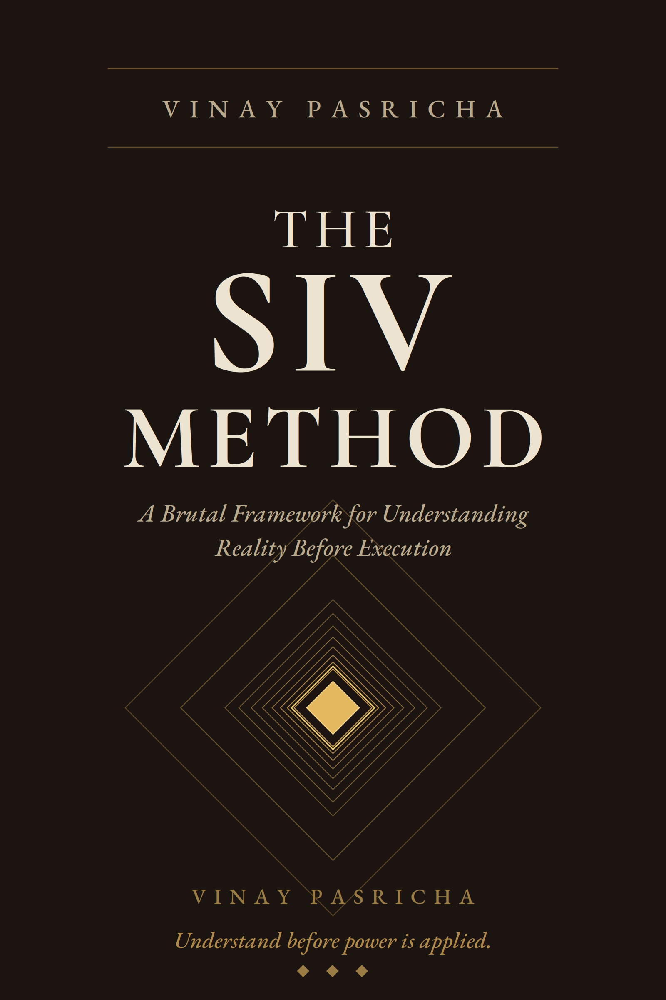

People act too soon because they think they understand. They decide too early because uncertainty irritates them. They mistake conviction for truth, speed for clarity, and familiarity for understanding. Then they call the result judgment.
The SIV Method — Socratic · Iterative · Vinay — is a structured method for examining any important reality through multiple dynamically generated lenses, applying Socratic pressure to every claim, and converging toward one integrated understanding strong enough to support action.

A Brutal Framework for Understanding Reality Before Execution
Type it in your own words. The method then walks you through SIV — multiple lenses, Socratic pressure, an integrated understanding. You leave with a one-page thinking artefact. A difficult decision. A recurring conflict. A direction that feels unclear. Begin anywhere.
Begin →SIV occupies a precise place in serious work: after casual thought, before applied force. It is not execution — that belongs to a separate discipline. Execution applies what SIV first earns the right to apply.
Not a paragraph. Not a story. Two sentences that state what is being examined, and why it matters. If you cannot state the issue in two sentences, you do not yet know what you are examining.
No fixed set. No checklist of "always use these five perspectives." Each issue demands its own angles — formally named, self-explanatory, case-generated, directional. A lens is not a viewpoint; it is a specific angle that illuminates what others might miss.
Each lens becomes, temporarily, the entire frame of understanding. Early findings constrain later possibilities. Later lenses must accommodate what earlier lenses exposed. The inquiry does not rush.
Coherence is not evidence. Emotion is not argument. Certainty is not truth. The Socratic engine tests every interpretation against contradiction, structural analysis, and falsification pressure. A claim that cannot survive does not survive.
Not all perspectives are equal. Some carry more reality — more explanatory weight — than others. The weighting must be argued for, not assumed, and it must come late in the inquiry, after pressure has done its work.
Plurality is not the product. The product is the strongest picture that can currently be defended given the inquiry completed. Convergence is not summary — it is reassembly. It distinguishes driver from symptom, central from peripheral.
Two distinct outputs. What has become reasonably clear, and what remains obscure. This separation keeps convergence honest. It names the boundaries of what has actually been examined and what remains to be discovered.
The action that flows from examined ground is built differently than action that flows from initial intuition. Not slower. Apter. The chances of being helpful — rather than randomly applied or counterproductively harsh — are much higher.
Brainstorming generates without pressure. SIV generates under pressure. The pressure is what prevents it from becoming creative ideation without traction in reality.
Decision trees assume a known structure. SIV generates structure from the issue itself. The structure emerges from the inquiry rather than pre-existing.
Debate has winners and losers. People arrive with positions and defend them. SIV has only one goal: contact with reality. No positions to defend, only interpretations to test.
Therapy treats the person. SIV treats the interpretation. Therapy asks what the issue means about the person. SIV asks what is actually happening, independent of what it means about anyone's identity or worth.
The mind wants relief. Reality demands more.
Most failure does not begin in action. It begins earlier, quieter, deeper inside the frame — in the moment we decide we understand something before we actually do. That feeling of clarity arriving before the work of clarity has been completed. It is the sensation of understanding without the substance of it.
In medicine, a young doctor settles on heart attack and reads the EKG to confirm it. In a marriage, a withdrawn partner is interrogated, not inquired into. In work, a leader mistakes early evidence for durable reality, and a year later the assumptions are revealed to be thin. The confidence was real. The understanding was not. The cost is rarely the visible failure. It is the trust that corrodes when decisions keep failing, the confidence that hollows when you realize you have been wrong about something you were certain about.
SIV exists for people who are tired of paying that cost. It is not a philosophy or a productivity system. It is not therapy or mindfulness. It is a method for people who work — who decide, lead, build, treat, shape — and who want to act on ground that has been properly examined. It is not the last word. It is the opening move.
— Adapted from the preface to The SIV Method